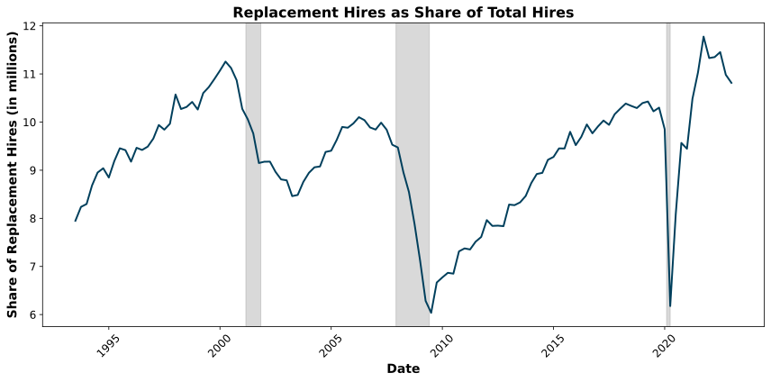
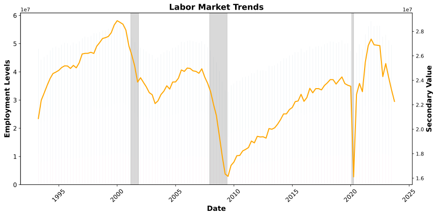
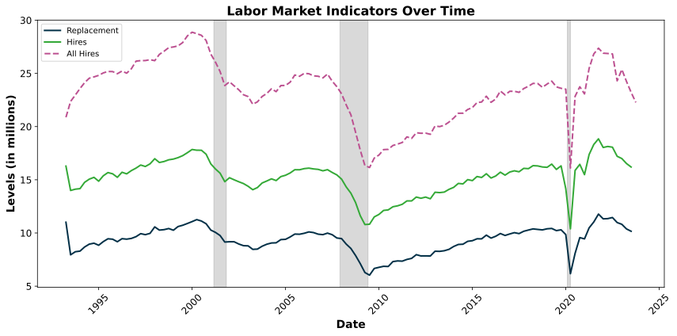

Data downloaded & extracted successfully.1 Data and Methodology
1.1 File Naming Convention for LEHD Data
The LEHD provides various data sets for the US based on Census data. …
LEHD Data Naming Convention (Click to Expand)
| Component | Code | Description |
|---|---|---|
| GEOHI (Geography Identifier) | all |
All available states |
us |
National data (50 states + DC) | |
metro |
CBSA-level collection (metropolitan areas) | |
[st] |
Two-letter state postal code (e.g., ca for California) |
|
[NNNNN] |
CBSA-derived code for metro areas | |
| DEMO (Demographic Breakdown) | d |
No demographic detail |
rh |
Race by Ethnicity | |
sa |
Sex by Age | |
se |
Sex by Education | |
sarhe |
Combined sa, rh, and se |
|
| FAS (Firm Age & Size Breakdown) | f |
No firm size or age breakdown |
fa |
Firm age tabulations | |
fs |
Firm size tabulations | |
| GEOCAT (Geographic Category) | gb |
Metropolitan (complete) |
gc |
Counties | |
gm |
Metropolitan/Micropolitan (state parts) | |
gn |
National (50 States + DC) | |
gs |
States | |
gw |
Workforce Investment Areas | |
| INDCAT (Industry Classification) | n |
All industries |
ns |
NAICS sectors | |
n3 |
NAICS subsectors | |
n4 |
NAICS industry groups | |
| OWNCAT (Ownership Classification) | of |
Federal Government |
op |
All Private | |
oslp |
State, Local, and Private ownership | |
| SA (Seasonal Adjustment) | s |
Seasonally adjusted |
u |
Not seasonally adjusted | |
| EXT (File Format) | csv |
Comma-Separated file |
pdf |
Printable PDF | |
xls |
Excel (limited availability) | |
xlsx |
Excel (not available for large files) |
Source: LEHD CSV Naming Convention
Quick Example Breakdown - qwi → Quarterly Workforce Indicators (QWI) Counts - us → National-level data - sa → Sex by Age - f → No firm size or age breakdown - gn → National (50 states + DC) - ns → NAICS sectors - op → All Private ownership - u → Not seasonally adjusted
Note: National QWI data is only available for Private ownership!
Now let’s take a quick look at the data to know what we are working with and how to proceed.
Column Names (formatted):
periodicity | seasonadj | geo_level | geography | ind_level | industry | ownercode | sex | agegrp |
race | ethnicity | education | firmage | firmsize | year | quarter | Emp | EmpEnd | EmpS | EmpTotal
| EmpSpv | HirA | HirN | HirR | Sep | HirAEnd | SepBeg | HirAEndRepl | HirAEndR | SepBegR |
HirAEndReplR | HirAS | HirNS | SepS | SepSnx | TurnOvrS | FrmJbGn | FrmJbLs | FrmJbC | FrmJbGnS |
FrmJbLsS | FrmJbCS | EarnS | EarnBeg | EarnHirAS | EarnHirNS | EarnSepS | Payroll | sEmp | sEmpEnd |
sEmpS | sEmpTotal | sEmpSpv | sHirA | sHirN | sHirR | sSep | sHirAEnd | sSepBeg | sHirAEndRepl |
sHirAEndR | sSepBegR | sHirAEndReplR | sHirAS | sHirNS | sSepS | sSepSnx | sTurnOvrS | sFrmJbGn |
sFrmJbLs | sFrmJbC | sFrmJbGnS | sFrmJbLsS | sFrmJbCS | sEarnS | sEarnBeg | sEarnHirAS | sEarnHirNS
| sEarnSepS | sPayroll
seasonadj: U
geo_level: N
ind_level: A, S
industry: 00, 11, 21, 22, 23, 31-33, 42, 44-45, 48-49, 51, 52, 53, 54, 55, 56, 61, 62, 71, 72, 81
ownercode: A05
sex: 0, 1, 2
agegrp: A00, A01, A02, A03, A04, A05, A06, A07, A08
race: A0
ethnicity: A0
education: E0
firmage: 0
firmsize: 0Now that we can see the data and know which variables have various cateogries, we can proceed by extracting the time series that we are most interested in.
The variables typically contained in the QWI data follow in a table below:
Variables Table (Click to Expand)
| Indicator Variable | Alternate Name | Status Flag | Indicator Name | Description | Units | Concept | Base |
|---|---|---|---|---|---|---|---|
| Emp | B | sEmp | Beginning-of-Quarter Employment | Estimate of the total number of jobs on the first day of the reference quarter | Count | Employment | 1 |
| EmpEnd | E | sEmpEnd | End-of-Quarter Employment | Estimate of the number of jobs on the last day of the quarter | Count | Employment | 1 |
| EmpS | F | sEmpS | Full-Quarter Employment (Stable) | Estimate of stable jobs - the number of jobs that are held on both the first and last day of the quarter with the same employer | Count | Employment | 1 |
| EmpTotal | M | sEmpTotal | Employment - Reference Quarter | Estimated count of people employed in a firm at any time during the quarter | Count | Employment | 1 |
| EmpSpv | Fpv | sEmpSpv | Full-Quarter Employment in the Previous Quarter | Estimate of stable jobs in the quarter before the reference quarter | Count | Employment | 1 |
| HirA | A | sHirA | Hires (All Accessions) | Estimated number of workers who started a new job in the specified quarter | Count | Hire | 1 |
| HirN | H | sHirN | New Hires | Estimated number of workers who started a new job excluding recall hires | Count | Hire | 1 |
| HirR | R | sHirR | Recall Hires | Estimated number of workers who returned to the same employer where they had worked within the previous year | Count | Hire | 1 |
| Sep | S | sSep | Separations (All) | Estimated number of workers whose job with a given employer ended in the specified quarter | Count | Separation | 1 |
| HirAEnd | CA | sHirAEnd | End-of-Quarter Hires | Estimated number of workers who started a new job in the specified quarter, which continued into next quarter | Count | Hire | 1 |
| SepBeg | CS | sSepBeg | Beginning-of-Quarter Separations | Estimated number of workers whose job in the previous quarter continued and ended in the given quarter | Count | Separation | 1 |
| HirAEndRepl | EI | sHirAEndRepl | Replacement Hires | Hires into continuous quarter employment in excess of job creation | Count | Hire | 1 |
| HirAEndR | CAR | sHirAEndR | End-of-Quarter Hiring Rate | Hires as a percent of average employment | Rate | Hire | (Emp + EmpEnd)/2 |
| SepBegR | CSR | sSepBegR | Beginning-of-Quarter Separation Rate | Separations as a percent of average employment | Rate | Separation | (Emp + EmpEnd)/2 |
| HirAEndReplR | EIR | sHirAEndReplR | Replacement Hiring Rate | Replacement hires as a percent of the average of beginning- and end-of-quarter employment | Rate | Hire | (Emp + EmpEnd)/2 |
| HirAS | FA | sHirAS | Hires (All Hires into Full-Quarter Employment) | Estimated number of workers that started a job that lasted at least one full quarter with a given employer | Count | Hire | 1 |
| HirNS | FH | sHirNS | New Hires (New Hires into Full-Quarter Employment) | Estimated number of workers who started a job that they had not held within the past year and the job turned into a job that lasted at least a full quarter with a given employer | Count | Hire | 1 |
| SepS | FS | sSepS | Separations (Flows out of Full-Quarter Employment) | Estimated number of workers who had a job for at least a full quarter and then the job ended | Count | Separation | 1 |
| SepSnx | FSnx | sSepSnx | Separations in the Next Quarter (Flows out of Full-Quarter Employment) | Estimated number of workers in the next quarter who had a job for at least a full quarter and then the job ended | Count | Separation | 1 |
| TurnOvrS | FT | sTurnOvrS | Turnover (Stable) | The rate at which stable jobs begin and end | Rate | Turnover | 2*EmpS |
| FrmJbGn | JC | sFrmJbGn | Firm Job Gains (Job Creation) | Estimated number of jobs gained at firms throughout the quarter | Count | Job Flows | 1 |
| FrmJbLs | JD | sFrmJbLs | Firm Job Loss (Job Destruction) | Estimated number of jobs lost at firms throughout the quarter | Count | Job Flows | 1 |
| FrmJbC | JF | sFrmJbC | Firm Job Change (Net Change) | Difference between firm job gain and firm job loss | Count | Job Flows | 1 |
| FrmJbGnS | FJC | sFrmJbGnS | Firm Job Gains (Stable) | Estimated number of full-quarter jobs gained at firms | Count | Job Flows | 1 |
| FrmJbLsS | FJD | sFrmJbLsS | Firm Job Loss (Stable) | Estimated number of full-quarter jobs lost at firms | Count | Job Flows | 1 |
| FrmJbCS | FJF | sFrmJbCS | Firm Job Change (Stable; Net Change) | Net growth in jobs that last a full quarter | Count | Job Flows | 1 |
| EarnS | ZW3 | sEarnS | Average Monthly Earnings (Full-Quarter Employment) | Average monthly earnings of employees with stable jobs | Dollars | Earnings | EmpS |
| EarnBeg | ZW2B | sEarnBeg | Average Monthly Earnings (Beginning-of-Quarter Employment) | Average monthly earnings of employees who worked on the first day of the reference quarter | Dollars | Earnings | Emp |
| EarnHirAS | ZWFA | sEarnHirAS | Average Monthly Earnings (All Hires into Full-Quarter Employment) | Average monthly earnings for workers who started a job that turned into a job lasting a full quarter | Dollars | Earnings | HirAS |
| EarnHirNS | ZWFH | sEarnHirNS | Average Monthly Earnings (New Hires into Full-Quarter Employment) | Average monthly earnings of newly stable employees | Dollars | Earnings | HirNS |
| EarnSepS | ZWFS | sEarnSepS | Average Monthly Earnings (Flows out of Full-Quarter Employment) | Average monthly earnings of separations from full-quarter status at an establishment | Dollars | Earnings | SepSnx |
| Payroll | W1 | sPayroll | Total Quarterly Payroll | Total quarterly payroll for all jobs | Dollars | Earnings | 1 |
Source: LEHD Public Use Schema
The categorical variables show us additional levels of detail that we can ge, beyond the basic aggregates.
Categorical Variables Table (Click to Expand)
5.1. Agegrp
| agegrp | Label |
|---|---|
| A00 | All Ages (14-99) |
| A01 | 14-18 |
| A02 | 19-21 |
| A03 | 22-24 |
| A04 | 25-34 |
| A05 | 35-44 |
| A06 | 45-54 |
| A07 | 55-64 |
| A08 | 65-99 |
5.2. Education
| education | Label |
|---|---|
| E0 | All Education Categories |
| E1 | Less than high school |
| E2 | High school or equivalent, no college |
| E3 | Some college or Associate degree |
| E4 | Bachelor’s degree or advanced degree |
| E5 | Educational attainment not available (workers < 24) |
5.3. Ethnicity
| ethnicity | Label |
|---|---|
| A0 | All Ethnicities |
| A1 | Not Hispanic or Latino |
| A2 | Hispanic or Latino |
5.4. Firmage
| firmage | Label |
|---|---|
| 0 | All Firm Ages |
| 1 | 0-1 Years |
| 2 | 2-3 Years |
| 3 | 4-5 Years |
| 4 | 6-10 Years |
| 5 | 11+ Years |
| N | Firm Age Not Available |
5.5. Firmsize
| firmsize | Label |
|---|---|
| 0 | All Firm Sizes |
| 1 | 0-19 Employees |
| 2 | 20-49 Employees |
| 3 | 50-249 Employees |
| 4 | 250-499 Employees |
| 5 | 500+ Employees |
| N | Firm Size Not Available |
5.6. Ownercode
| ownercode | Label |
|---|---|
| A00 | State and local government + private |
| A01 | Federal government |
| A05 | All Private |
5.7. Periodicity
| periodicity | Label |
|---|---|
| A | Annual data |
| Q | Quarterly data |
5.8. Quarter
| quarter | Label |
|---|---|
| 1 | 1st Quarter (Jan-Mar) |
| 2 | 2nd Quarter (Apr-Jun) |
| 3 | 3rd Quarter (Jul-Sep) |
| 4 | 4th Quarter (Oct-Dec) |
5.9. Race
| race | Label |
|---|---|
| A0 | All Races |
| A1 | White Alone |
| A2 | Black or African American Alone |
| A3 | American Indian or Alaska Native Alone |
| A4 | Asian Alone |
| A5 | Native Hawaiian or Other Pacific Islander |
| A6 | Some Other Race Alone (Not Used) |
| A7 | Two or More Race Groups |
5.10. Seasonadj
| seasonadj | Label |
|---|---|
| S | Seasonally adjusted |
| U | Not seasonally adjusted |
5.11. Sex
| sex | Label |
|---|---|
| 0 | All Sexes |
| 1 | Male |
| 2 | Female |
5.12.1. Industry Levels
| ind_level | Label |
|---|---|
| A | All Industries |
| S | NAICS Sectors |
| 3 | NAICS Subsectors |
| 4 | NAICS Industry Groups |
5.12.2. Industry
| industry | Label | ind_level |
|---|---|---|
| 00 | All NAICS Sectors | A |
| 000 | All NAICS Subsectors | A |
| 0000 | All NAICS Industry Groups | A |
| 11 | Agriculture, Forestry, Fishing and Hunting | S |
| 111 | Crop Production | 3 |
| 1111 | Oilseed and Grain Farming | 4 |
| 1112 | Vegetable and Melon Farming | 4 |
| … | … | … |
| 2383 | Building Finishing Contractors | 4 |
| 2389 | Other Specialty Trade Contractors | 4 |
| 31-33 | Manufacturing | S |
| 311 | Food Manufacturing | 3 |
| 3111 | Animal Food Manufacturing | 4 |
| 3112 | Grain and Oilseed Milling | 4 |
| 3113 | Sugar and Confectionery Product Manufacturing | 4 |
| … | … | … |
5.13. Degree Level
| degree_level | Label |
|---|---|
| 00 | All Degree Levels |
| 01 | Certificate < 1 year |
| 02 | Certificate 1-2 years |
| 03 | Associate’s Degree |
| 04 | Certificate 2-4 years |
| 05 | Baccalaureate |
| 06 | Post-Baccalaureate Certificate |
| 07 | Master’s Degree |
| 08 | Post-Master’s Certificate |
| 17 | Doctoral - Research/Scholarship |
| 18 | Doctoral - Professional Practice |
Source: LEHD Public Use Schema
1.2 First Analysis
Let us further filter the data because we are only interested in the aggregate series for now.
Code
## Create date variable
df_qwi_filtered = df_qwi[
(df_qwi["sex"] == 0) &
(df_qwi["agegrp"] == "A00") &
(df_qwi["industry"] == "00") &
(df_qwi["ind_level"] == "A")
].copy() # Copy to avoid modifying the original DataFrame
df_qwi_filtered["date"] = pd.PeriodIndex(
df_qwi_filtered["year"].astype(str) + "Q" + df_qwi_filtered["quarter"].astype(str),
freq="Q"
).to_timestamp()
# Drop unnecessary columns
df_qwi_filtered.drop(columns=["periodicity", "seasonadj", "geo_level", "ind_level", "industry",
"ownercode", "sex", "agegrp", "race", "ethnicity", "education",
"firmage", "firmsize", "year", "quarter", "geography"], inplace=True)
# Ensure "date" is the first column
df_qwi_filtered = df_qwi_filtered[["date"] + [col for col in df_qwi_filtered.columns if col != "date"]]
# Export to deseasonalize in R
df_qwi_filtered.to_csv("temp_df.csv", index=False)
print("Data filtered and ready for deseasonalization.")Data filtered and ready for deseasonalization.It turns out that we need to use R (together with python) to use the usual seasonal adjustment with X13-ARIMA.
Code
import subprocess
# Run the R script
subprocess.run(["Rscript", "sheet_seas_adjust.r"], check=True)
# Clean up by deleting the temp file
os.remove("temp_df.csv")
print("Data deseasonalized successfully.")
# We still need some data from FREDData deseasonalized successfully.Code
# Load the adjusted data
df_qwi_filtered = pd.read_csv("qwi_data_seasadj.csv")
## Plotting
import os
import pandas as pd
import matplotlib.pyplot as plt
import matplotlib.dates as mdates
from datetime import datetime
# plt.ioff() # Plots only show when explicitly called in quarto
## Single Time Series
def fun_plot_single_ts(df, date_col, value_col, title="Time Series Plot", xlabel="Date", ylabel="Value", color="#023047", recession_shading=True, recessions=None, scale_factor=1):
# Convert date column to datetime format
df[date_col] = pd.to_datetime(df[date_col])
# Define default recession periods if none are provided
if recessions is None:
recessions = [
("2001-03-01", "2001-11-01"),
("2007-12-01", "2009-06-01"),
("2020-02-01", "2020-04-01")
]
# Convert recession dates to datetime format
recession_periods = [(datetime.strptime(start, "%Y-%m-%d"), datetime.strptime(end, "%Y-%m-%d")) for start, end in recessions]
# Apply scaling
df[value_col] /= scale_factor
# Create the figure and axis
fig, ax = plt.subplots(figsize=(12, 6))
# Plot the time series
ax.plot(df[date_col], df[value_col], color=color, linewidth=2, label='_nolegend_')
# Highlight recession periods with lighter shading
if recession_shading:
for start, end in recession_periods:
ax.axvspan(start, end, color="grey", alpha=0.3)
# Labels and title
ax.set_xlabel(xlabel, fontsize=14, fontweight="bold")
ax.set_ylabel(ylabel, fontsize=14, fontweight="bold")
ax.set_title(title, fontsize=16, fontweight="bold")
# Improve readability
ax.xaxis.set_major_locator(mdates.YearLocator(base=5)) # Show every 5 years
ax.xaxis.set_major_formatter(mdates.DateFormatter("%Y"))
ax.tick_params(axis='x', rotation=45, labelsize=12)
ax.tick_params(axis='y', labelsize=12)
ax.grid(False) # Remove grid
# Adjust layout
plt.tight_layout()
# Show the plot
plt.show()
## Three Time Series
def fun_plot_three_ts(df, date_col, value_col1, value_col2, value_col3, title="Time Series Plot", xlabel="Date", ylabel="Value", color1="#023047", color2="#34a937", color3="#bc5090", line_type2="solid", line_type3="dashed", recession_shading=True, recessions=None, legend1="Series 1", legend2="Series 2", legend3="Series 3", scale_factor=1):
# Convert date column to datetime format
df[date_col] = pd.to_datetime(df[date_col])
# Define default recession periods if none are provided
if recessions is None:
recessions = [
("2001-03-01", "2001-11-01"),
("2007-12-01", "2009-06-01"),
("2020-02-01", "2020-04-01")
]
# Convert recession dates to datetime format
recession_periods = [(datetime.strptime(start, "%Y-%m-%d"), datetime.strptime(end, "%Y-%m-%d")) for start, end in recessions]
# Apply scaling
df[value_col1] /= scale_factor
df[value_col2] /= scale_factor
df[value_col3] /= scale_factor
# Create the figure and axis
fig, ax = plt.subplots(figsize=(12, 6))
# Plot the three time series
ax.plot(df[date_col], df[value_col1], color=color1, linewidth=2, label=legend1)
ax.plot(df[date_col], df[value_col2], color=color2, linewidth=2, linestyle=line_type2, label=legend2)
ax.plot(df[date_col], df[value_col3], color=color3, linewidth=2, linestyle=line_type3, label=legend3)
# Highlight recession periods with lighter shading
if recession_shading:
for start, end in recession_periods:
ax.axvspan(start, end, color="grey", alpha=0.3)
# Labels and title
ax.set_xlabel(xlabel, fontsize=14, fontweight="bold")
ax.set_ylabel(ylabel, fontsize=14, fontweight="bold")
ax.set_title(title, fontsize=16, fontweight="bold")
# Improve readability
ax.xaxis.set_major_locator(mdates.YearLocator(base=5)) # Show every 5 years
ax.xaxis.set_major_formatter(mdates.DateFormatter("%Y"))
ax.tick_params(axis='x', rotation=45, labelsize=12)
ax.tick_params(axis='y', labelsize=12)
ax.grid(False) # Remove grid
ax.legend()
# Adjust layout
plt.tight_layout()
# Show the plot
plt.show()
def fun_plot_bar_three_line(df, date_col, bar_col1, bar_col2, bar_col3, line_col, title="Time Series Plot", xlabel="Date", ylabel="Primary Value", color_bar1="#bc5090", color_bar2="#58508d", color_bar3="#003f5c", color_line="#ffa600", recession_shading=True, recessions=None, scale_factor=1):
# Convert date column to datetime format
df[date_col] = pd.to_datetime(df[date_col])
# Define default recession periods if none are provided
if recessions is None:
recessions = [
("2001-03-01", "2001-11-01"),
("2007-12-01", "2009-06-01"),
("2020-02-01", "2020-04-01")
]
# Convert recession dates to datetime format
recession_periods = [(datetime.strptime(start, "%Y-%m-%d"), datetime.strptime(end, "%Y-%m-%d")) for start, end in recessions]
# Apply scaling
df[bar_col1] /= scale_factor
df[bar_col2] /= scale_factor
df[bar_col3] /= scale_factor
df[line_col] /= scale_factor
# Create the figure and axis
fig, ax = plt.subplots(figsize=(12, 6))
# Plot stacked bars
ax.bar(df[date_col], df[bar_col1], color=color_bar1, label=bar_col1)
ax.bar(df[date_col], df[bar_col2], bottom=df[bar_col1], color=color_bar2, label=bar_col2)
ax.bar(df[date_col], df[bar_col3], bottom=df[bar_col1] + df[bar_col2], color=color_bar3, label=bar_col3)
# Plot the line series
ax2 = ax.twinx()
ax2.plot(df[date_col], df[line_col], color=color_line, linewidth=2, label=line_col)
# Highlight recession periods with lighter shading
if recession_shading:
for start, end in recession_periods:
ax.axvspan(start, end, color="grey", alpha=0.3)
# Labels and title
ax.set_xlabel(xlabel, fontsize=14, fontweight="bold")
ax.set_ylabel(ylabel, fontsize=14, fontweight="bold")
ax.set_title(title, fontsize=16, fontweight="bold")
ax2.set_ylabel("Secondary Value", fontsize=14, fontweight="bold")
# Improve readability
ax.xaxis.set_major_locator(mdates.YearLocator(base=5)) # Show every 5 years
ax.xaxis.set_major_formatter(mdates.DateFormatter("%Y"))
ax.tick_params(axis='x', rotation=45, labelsize=12)
ax.tick_params(axis='y', labelsize=12)
ax.grid(False) # Remove grid
# Adjust layout
plt.tight_layout()
# Show the plot
plt.show()


{kind=link}
{kind=link}
{kind=link}
Now that we know that the plots work and look ok, let